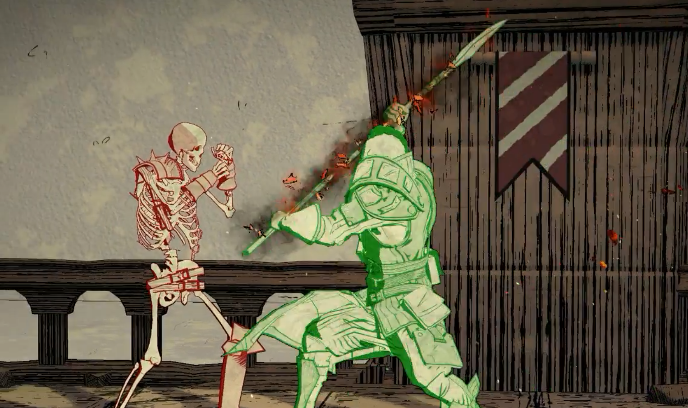
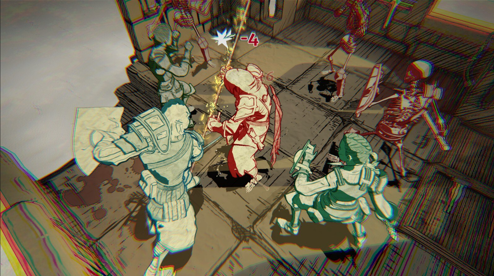
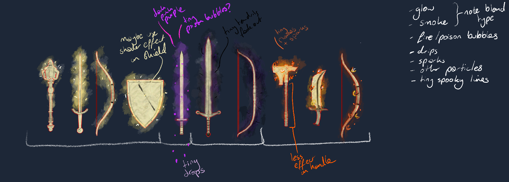

Magic Weapons // Visual Effects
Created at Ground Shatter
Made in Unity
Magic Weapons for the deck-building Roguelike, Knights in Tight Spaces (developed by Ground Shatter, published by Raw Fury).
Certain weapons in the game have magic effects on them, and we wanted to show that with a particle system in a way that we could add the effect to more weapons and shields, if and when we needed to.
The magic VFX was made in VFX graph, and all of them use the same components which can be turned on and off and have their colours changed to suit the type of magic.


